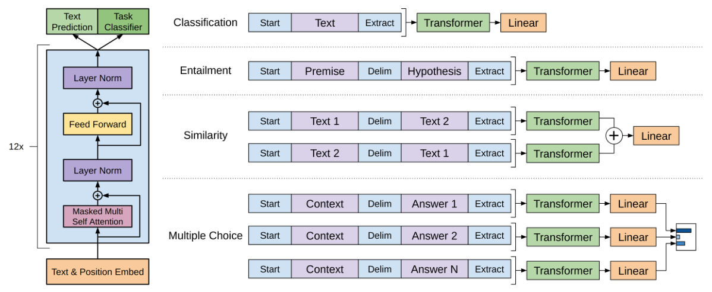
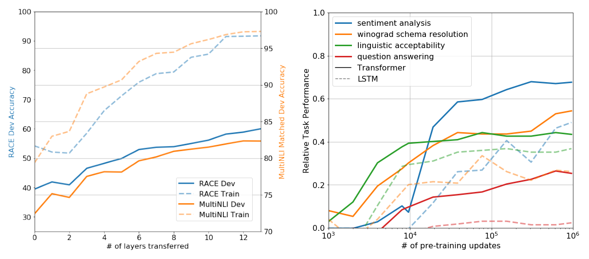

先读书，再做题
Radford 等人 2018 年在 OpenAI 写的《Improving Language Understanding by Generative Pre-Training》，就是后来被叫作 GPT-1 的那篇。它分两步：先让一个模型在 7000 多本没有标注的书上练「猜下一个词」，学会语言；再用每个任务的少量标注数据，把同一个模型微调成答题的模型。一个通用模型，在 12 个语言理解数据集里的 9 个刷新了当时的最好成绩。后来的 GPT-2、BERT、GPT-3 都走在这条「先预训练、再适配」的路上。
- 正文只走一条线：要解决什么问题 → 分两步怎么做、为什么这样就行 → 哪个实验证明了哪一步。只读每节的标题和每段第一句，也能串起来。
- 公式、符号表、训练参数、完整结果表、概念解释、当时的背景，都在页尾的附录里，默认折叠，标明对应原文第几节。
- 小数字例子都验算过：为讲解设定的标「示意」，按原文规格估算的标「推算」。
- 模型的零件（自注意力、掩码、残差）在 004 Transformer 讲过，「猜下一个词」在 001 NPLM 讲过，这里不重复。
1要解决的问题
本文想要一个能广泛理解语言的模型：判断两句话是否矛盾、做阅读理解、判断两句话是否同义、判断句子通不通顺，在这些任务上都做得好。挡在前面的有两个问题。
问题一：每个任务的标注都很少
有标注的数据要人一条条标，贵、慢，所以每个任务的数据都不多。没标注的文本（书、网页）却多得用不完。只用标注数据从头训练一个深度网络，模型要同时学「语言是什么」和「这道题怎么做」，几千条样本撑不起前一件事。
问题二：从没标注的文本里学到的，前人只搬走了词这一层
「先在大量文本上学，再搬到任务上」，前人已经在做，搬法有三种。搬得越少，每个任务要从头学的就越多：
最常用的是 ① 词向量：在大量文本上给每个词学一个向量，放进任务模型当第一层。可一个词只有一个向量，不管上下文，搬走的只是「词」这一层的信息。② 搬得多一些，但每个任务还要另外设计一套结构，这套结构从头学，用不上预训练。
本文走 ③：把整个预训练好的网络当作任务模型的起点，每个任务只加一个线性层。接下来两节就是这两步。
2第一步：在书上猜下一个词
做什么
给模型看一段文字的前面部分，让它猜下一个词，猜对的概率越高越好。答案就在文本里，不需要人标，所以可以用几千本书来练。这一步解决问题一：语言能力从没标注的文本里学，不占用宝贵的标注数据。
为什么猜下一个词能学到有用的东西
要猜得准，模型得真的懂。一个例子（示意）：要把「奖杯放不进手提箱，因为它太___」填成「大」，得知道「它」指奖杯，还得知道大东西放不进小东西；要猜对侦探小说的下一句，得记住前面的人物和线索。猜下一个词像一场伪装起来的综合考试，什么都要懂一点，而答案从文本里白拿。原文把这写成一个假说：模型为了把语言建模做好，会顺带学会许多我们要评测的能力。第 5 节有支持它的实验。
用什么模型：只留 Transformer 的解码器
模型是 12 层 Transformer 解码器。每一层只有两块：带掩码的自注意力和前馈网络。掩码的意思是，每个位置只能看到自己和左边的词，看不到右边，因为右边就是要猜的答案。
掩码带来一个后面要用的性质：只有最后一个位置看过全部输入，所以它的向量可以代表整段话。（原文的公式就是取最后一个位置，理由是我根据掩码推的。）
怎么「猜」：拿输出向量和每个词比相似度
12 层算完，最后一个位置得到一个向量。拿它和词表里每个词的向量比相似度，越像的词分数越高，再把分数换成概率。查词向量的表和打分用的表是同一张。
为什么用整本的书
语料是 BooksCorpus，7000 多本没出版的书。作者选它的理由是书里有大段连续的文本，模型才学得到「前面几页埋的线索，后面怎么用」这种长距离的关系。另一个常用语料规模差不多，但句子被打乱过，长距离的结构就没了。这是作者的推断，本文没有拿两种语料做对比实验。
3第二步：加一个线性层，微调
做什么
拿一个任务的标注数据，每条是一段输入和一个标签。把预训练好的网络整份拿过来，在最顶上加一个很小的线性层：它把最后一个位置的向量变成每个类别的分数。然后用标注数据把所有参数一起再训练几轮。这一步解决问题二：搬走的是整个网络，不只是词向量；每个任务也只新增一个线性层，没有另起一套结构。
为什么只加一个线性层就够：最后那个向量已经是「读懂了输入」的表示，线性层只需要学「哪个方向对应哪一类」，这件事几千条样本就学得会。主体也只需要从预训练的位置挪一小段，所以微调的学习率只有预训练的四分之一，大多数任务训练 3 轮就够。学习率小，是为了不把预训练学到的东西冲掉。
微调时顺带接着练「猜下一个词」
只用任务的标签来训练，小数据上容易过拟合，也可能把预训练学到的语言能力忘掉。所以作者在微调时，让模型在任务数据自己的文字上继续猜下一个词，两个目标按 1 : 0.5 加起来一起优化。
作者说这样能提高泛化、加快收敛。不过第 5 节的实验显示，它的作用其实可有可无。
4一个模型做所有任务：改写输入
难点：任务的输入长得不一样
预训练的模型只见过「一长条连续文本」，可任务的输入各有各的形状：
| 任务类型 | 做什么 | 输入的形状 |
|---|---|---|
| 分类 | 判断句子合不合语法、情感是正还是负 | 单句 |
| 推理 | 读一对句子（前提、假设），判断是蕴含、矛盾还是中立 | 有顺序的两句 |
| 语义相似 | 判断两句话是不是一个意思 | 没有顺序的两句 |
| 问答与常识推理 | 阅读理解选择题；给一个短故事，选对的结尾 | 文章 + 问题 + 几个候选答案 |
前人的办法是为每种形状设计一套新结构，可新结构要从头学，又回到了问题二。
办法：不改网络，改输入
本文把每种输入拼成一条文字序列，让模型像读一段普通文本那样一路读下来：开头加起始符 ⟨s⟩，结尾加结束符 ⟨e⟩，两段之间加分隔符 $。读完后取结束符那个位置的向量（它看过全部输入）送进线性层。

- 分类：⟨s⟩ 句子 ⟨e⟩。
- 推理：⟨s⟩ 前提 $ 假设 ⟨e⟩。
- 语义相似：两句话本来没有顺序，可模型是从左往右读的，换个顺序结果就不同。办法是两种顺序都拼一条，各读一遍，把两个向量相加：
- 问答与常识推理：每个候选答案单独拼一条「文章 $ 候选」，各读一遍得到一个分数，再把所有候选的分数一起换成概率，选最高的：
网络一个零件都不换，任务的差别全放进输入的写法。预训练学到的东西因此被完整用上，每个任务只多一个线性层。
5证据：它为什么有效
结果：12 个数据集，9 个刷新了最好成绩
不少对手是专为单个任务设计的结构，还有好几个是多个模型的集成（阅读理解上是 9 个模型），本文每一项都是一个单模型。没刷新的三个里，RTE 是最小的推理数据集，只有 2490 条，输给了一个用多个任务一起训练的模型。
提升最大的是要读长文、要推理的任务：阅读理解的高中题涨了 7.1 分，比初中题多涨了 4 分多；故事结尾涨了 8.9 分。
原文把这归因于模型「处理长上下文的能力」，这正是第一步选整本书、选 Transformer 想要的效果。我的推测是它和长篇小说语料有关，原文没做对照。
消融：三个设计，各值多少
结果好，还要知道是哪个设计带来的。作者把设计一个个拿掉，看 8 个任务的平均分：
- 第一步（预训练）是关键：去掉它，74.7 → 59.9。同一个模型，唯一的区别是有没有先读书，8 个任务全都变差，语义相似从 82.0 掉到 30.9。收益来自预训练，不是因为模型大。
- 选 Transformer 是对的：换成 LSTM，掉 5.6 分。LSTM 要把读过的内容压进一个固定大小的状态里，Transformer 每个位置都能直接回看前面所有的词，长文本上更有利。LSTM 只在一项上略高。要留个心眼（我补充的）：这里的 LSTM 只有一层，两者规模差不少，5.6 分里多少来自结构、多少来自规模，分不开。
- 微调时顺带猜词，可有可无：去掉反而高 0.3。它在大数据集上有帮助，在小数据集上没有。作者还是把它留在了最终模型里。
猜下一个词，真的在学做题的本事
回到第 2 节的假说。作者做了两个实验来验证：

- 左图：搬的层越多，越好。每多搬一层，成绩还在往上走，完整搬 12 层在推理任务上最多高 9%。预训练学到的东西分布在每一层里，不只是最底下的词向量，这正对着问题二。
- 右图：不微调，直接做题。作者给每个任务设计了一个只用「猜词概率」的规则，不更新任何参数。比如判断情感：在句子后面接上 very，看模型觉得下一个词是 positive 还是 negative 更顺（规则全表见附录 B）。这些规则的成绩随预训练稳定上升，说明猜下一个词的过程中，做题的本事确实在长；LSTM 的曲线更低、波动更大。
这是相关性的证据，不是严格的证明；规则也是人为每个任务设计的。
作者的结论
用生成式预训练加判别式微调，一个不针对任何任务的单一模型，就能取得很强的语言理解能力。在有大段连续文本的语料上预训练，模型学到了世界知识和处理长距离依赖的能力。这也提示了哪种模型（Transformer）和哪种数据（有长距离依赖的文本）最适合这条路。
6局限和后来
- 只能从左往右读：每个词看不到右边。BERT 改成双向（第 008 篇）。
- 每个任务仍要标注和一次微调：GPT-2 把「不微调直接做」推到前台（第 007 篇），GPT-3 用几个示范代替微调（第 011 篇）。
- 每个任务存一份完整参数：模型变大后很贵，LoRA 针对这一点（第 014 篇）。
- 规模还很小：1 亿多参数，没看继续做大会怎样（第 009 篇缩放定律）。
- 我补充的：语料、结构、训练方式同时换了，「赢」里有多少来自语料分不出来；没报告多次运行的波动，小数据集上几分的差距可能在波动之内。
它真正的长远影响，常见的看法是：指出了一条能一直放大的路。猜下一个词不需要标注，只要数据和算力继续增长，模型就能继续变强。
附录 · 想深入再看
下面每一块默认折叠，点开看。标题里写了对应原文的第几节。
A · 五个公式和符号表（原文第 3 节，Eq. 1–5）
第一步：猜下一个词
| 符号 | 是什么 |
|---|---|
| U = {u1, …, un} | 整个没标注的语料，一串 token |
| ui | 第 i 个位置的真实 token，就是要猜的「下一个词」 |
| k | 往前看多少个 token，本文 512 |
| Θ | 模型的全部参数 |
| Σ log P | 每个位置猜对的对数概率加起来，越大越好 |
模型怎么算出这个概率
| 符号 | 是什么 |
|---|---|
| U | 上下文的 token，写成独热矩阵（每行只有一个 1） |
| We | 词嵌入矩阵（词表大小 × 768），按编号查出每个词的向量 |
| Wp | 位置嵌入矩阵（512 × 768），加到词向量上，模型才知道顺序 |
| transformer_block | 一个解码器层：掩码自注意力 + 前馈网络 |
| hn · WeT | 最后一层的向量乘同一个 We 的转置，就是图 4 里「和每个词比相似度」 |
图 4 的验算：得分取 e 的幂是 2.718、3.004、1.649、0.670、0.741，总和 8.782，各自除以总和得到概率（合计 0.999 是舍入误差）。
第二步：微调
| 符号 | 是什么 |
|---|---|
| C | 一个任务的标注数据集，每条是输入 x1…xm 和标签 y |
| hlm | 最后一层、最后一个位置 m 的向量（768 维） |
| Wy | 新加的线性层，随机初始化 |
| L2 | 答题的目标：正确标签的对数概率之和 |
| L3 | 答题加上 0.5 倍的猜词，就是图 6 的总目标 |
一处疑点：L1 写的是对所有位置求和。如果真按长度求和，一个 200 个 token 的样本，猜词项会比答题项大两个数量级，λ = 0.5 就谈不上「辅助」。实际实现可能是按 token 平均的，原文没有说明，待核实。
B · 几个概念：生成式与判别式、评价指标、零样本规则
生成式与判别式。判别式模型学 P(y | x)：给定输入，答案是什么，只需要区分类别。生成式模型学数据本身的分布 P(x)：什么样的文本是像样的文本，语言模型就是生成式的。标题里的 Generative Pre-Training 指预训练用生成式目标（猜下一个词），微调换成判别式目标（答题）。后来这类「标签来自数据本身」的训练叫自监督，原文用的词是无监督。
四种评价指标。准确率：判对的比例。F1（MRPC、QQP 用）：同时看精确率和召回率，两类样本比例不均时比准确率可靠。Pearson 相关（STS-B 用）：模型打分和人工打分的线性相关程度。Matthews 相关（CoLA 用）：类别不均衡时更可靠的二分类指标，范围 −1 到 1，表里乘了 100。小例子（示意）：100 条样本，真阳 40、真阴 30、假阳 10、假阴 20，准确率 70%，F1 ≈ 0.727，Matthews 只有 ≈ 0.408。所以 CoLA 上涨 10 分，是在一个很难拿高分的指标上涨的。
零样本的四条规则（原文第 5 节）：
| 任务 | 规则 | 直观理解 |
|---|---|---|
| CoLA（语法） | 算整句每个 token 的平均对数概率，高于阈值判为合语法 | 通顺的句子，语言模型不觉得意外 |
| SST-2（情感） | 句尾加 very，比较接 positive 还是 negative 的概率高 | 「……很棒。very ___」，接 positive 更顺 |
| RACE（阅读理解） | 以文章和问题为条件，选平均对数概率最高的答案 | 和上下文一致的答案更顺口 |
| DPRD（指代消解） | 把代词分别换成两个可能的对象，选后文平均对数概率更高的 | 代入对的对象，后面读起来更通 |
CoLA 规则的小例子（示意）：「The cat sat on the mat」平均对数概率 −3.1，「mat the on sat cat The」是 −6.0，阈值设 −4.5，前者判合语法，后者判不合。这和后来 GPT-2、GPT-3 的零样本不完全一样：那里任务用自然语言写进提示，这里是每个任务一条手工规则。
C · 相关工作与当时的背景（原文第 1、2 节）
原文指出的两个没有共识的问题：学什么（预训练目标有语言模型、机器翻译、篇章连贯性，各自只在某些任务上占优），怎么搬（为每个任务改结构、复杂的训练流程、加辅助目标，常常几样组合）。本文选了最朴素的语言模型，没有做「哪种预训练目标最好」的对比，所以这是一个选择，不是被证明的结论。
半监督与无监督预训练：半监督是同时用少量有标注和大量无标注数据。原文对无监督预训练的定义是：目标是找到一个好的初始化点，而不是修改有监督的学习目标。前人认为预训练起到正则化的作用，让深度网络泛化更好。
和本文最接近的两条路线：一是 LSTM 语言模型预训练再微调（Dai 和 Le、ULMFiT），流程一样，但作者认为 LSTM 只擅长短距离，而且它们只用在文本分类上；二是把预训练模型的隐藏表示当额外特征（ELMo 等），每个任务都要大量新参数。输入改写成一条序列的「遍历式」做法，来自 Rocktäschel 等人；只用 Transformer 解码器，来自 Liu 等 2018 年生成维基百科摘要的工作。
当时的背景（2018）：词向量（word2vec 2013、GloVe 2014）是标配；2017–2018 年出现了 CoVe、ELMo、ULMFiT 这批搬更高层表示的工作，本文结果表里多处对手就是「+ ELMo」。Transformer 刚出来一年，LSTM 仍是主流。GLUE 评测 2018 年 4 月刚发布，本文用了其中 8 个任务。更早的无监督预训练（Hinton 2006 的深度信念网络、逐层预训练、去噪自编码器）曾是训不动深层网络的权宜办法，后来在视觉里被大规模有监督预训练取代；本文在语言上把它重新做成了主流（这段历史判断是我补充的，待核实）。
名字和发布：原文全文没有出现「GPT」，GPT-1 是后来为了和 GPT-2、GPT-3 区分才叫开的。原文页眉写着「Preprint. Work in progress.」，没有会议、日期和 arXiv 编号，具体发布时间待核实。
D · 模型规格、训练设置和参数量（原文 4.1 节）
| 004 base（编码器 + 解码器） | 006（仅解码器） | |
|---|---|---|
| 层数 | 编码器 6 + 解码器 6 | 12 |
| 向量维度 | 512 | 768 |
| 注意力头 | 8 | 12（每头 64 维） |
| 前馈网络内部 | 2048 | 3072 |
| 激活函数 | ReLU | GELU |
| 位置编码 | 固定的 sin / cos | 学出来的，最多 512 个位置 |
| 词表 | BPE，约 37000（英德） | BPE，40000 次合并 |
| dropout | 0.1 | 残差、嵌入、注意力三处都是 0.1 |
- 模型的来历：004 的解码器每层有三块，带掩码的自注意力、回头看编码器的注意力、前馈网络。没有编码器，中间那块就删掉，剩下的就是图 3 的一层。
- 预训练：Adam 优化器，每批 64 条随机抽取的、连续 512 个 token 的片段，训练 100 轮。学习率前 2000 步从 0 线性升到 2.5 × 10−4，之后按余弦曲线降到 0。用了改进版 L2 正则（w = 0.01，后来叫 AdamW 的做法，细节是我按引用标题推断的）；权重从 N(0, 0.02) 初始化。训练后在这份语料上的 token 级困惑度是 18.4。
- 微调：学习率 6.25 × 10−5，批大小 32，学习率线性衰减，预热占训练的 0.2%，分类器上加 0.1 的 dropout，λ = 0.5，大多数任务 3 轮。
- GELU：GELU(x) = x · Φ(x)，Φ 是标准正态分布的累积分布函数，可以看成平滑版的 ReLU：GELU(1) = 0.841，GELU(−1) = −0.159。原文没说为什么换。
- 参数量（推算）：每层注意力 4 个 768 × 768 矩阵约 236 万，前馈网络 768 × 3072 × 2 约 472 万，每层约 708 万，12 层约 8490 万；词嵌入 40000 × 768 约 3072 万，位置嵌入约 39 万。合计约 1.16 亿（没算偏置、层归一化）。004 base 是 6500 万。
- 文本处理：ftfy 清理文本，spaCy 分词。硬件和训练时长原文没写。
E · 原文的四张结果表（原文 4.2 节、第 5 节，Table 2–5）
Table 2 · 自然语言推理（准确率；5x 指 5 个模型的集成；空格原文如此）
| 方法 | MNLI-m | MNLI-mm | SNLI | SciTail | QNLI | RTE |
|---|---|---|---|---|---|---|
| ESIM + ELMo (5x) | - | - | 89.3 | - | - | - |
| CAFE (5x) | 80.2 | 79.0 | 89.3 | - | - | - |
| Stochastic Answer Network (3x) | 80.6 | 80.1 | - | - | - | - |
| CAFE | 78.7 | 77.9 | 88.5 | 83.3 | ||
| GenSen | 71.4 | 71.3 | - | - | 82.3 | 59.2 |
| Multi-task BiLSTM + Attn | 72.2 | 72.1 | - | - | 82.1 | 61.7 |
| 本文（单模型） | 82.1 | 81.4 | 89.9 | 88.3 | 88.1 | 56.0 |
Table 3 · 问答与常识推理（准确率；9x 指 9 个模型的集成）
| 方法 | Story Cloze | RACE-m | RACE-h | RACE |
|---|---|---|---|---|
| val-LS-skip | 76.5 | - | - | - |
| Hidden Coherence Model | 77.6 | - | - | - |
| Dynamic Fusion Net (9x) | - | 55.6 | 49.4 | 51.2 |
| BiAttention MRU (9x) | - | 60.2 | 50.3 | 53.3 |
| 本文 | 86.5 | 62.9 | 57.4 | 59.0 |
Table 4 · 语义相似与文本分类（mc = Matthews 相关，acc = 准确率，pc = Pearson 相关）
| 方法 | CoLA (mc) | SST-2 (acc) | MRPC (F1) | STS-B (pc) | QQP (F1) | GLUE |
|---|---|---|---|---|---|---|
| Sparse byte mLSTM | - | 93.2 | - | - | - | - |
| TF-KLD | - | - | 86.0 | - | - | - |
| ECNU（混合集成） | - | - | - | 81.0 | - | - |
| 单任务 BiLSTM + ELMo + Attn | 35.0 | 90.2 | 80.2 | 55.5 | 66.1 | 64.8 |
| 多任务 BiLSTM + ELMo + Attn | 18.9 | 91.6 | 83.5 | 72.8 | 63.3 | 68.9 |
| 本文 | 45.4 | 91.3 | 82.3 | 82.0 | 70.3 | 72.8 |
Table 5 · 消融（MNLI 列是 matched、mismatched 的平均）
| 变体 | 平均 | CoLA | SST-2 | MRPC | STS-B | QQP | MNLI | QNLI | RTE |
|---|---|---|---|---|---|---|---|---|---|
| 完整（Transformer + 辅助目标） | 74.7 | 45.4 | 91.3 | 82.3 | 82.0 | 70.3 | 81.8 | 88.1 | 56.0 |
| 去掉预训练 | 59.9 | 18.9 | 84.0 | 79.4 | 30.9 | 65.5 | 75.7 | 71.2 | 53.8 |
| 去掉辅助目标 | 75.0 | 47.9 | 92.0 | 84.9 | 83.2 | 69.8 | 81.1 | 86.9 | 54.4 |
| LSTM + 辅助目标 | 69.1 | 30.3 | 90.5 | 83.2 | 71.8 | 68.1 | 73.7 | 81.1 | 54.6 |
- 「9 / 12」我逐项数过：刷新的是 MNLI、SNLI、SciTail、QNLI、Story Cloze、RACE、STS-B、QQP、CoLA；没刷新的是 RTE、MRPC、SST-2。图 9 的 MNLI 用 matched 那一列。
- 一处前后不一致：原文第 1 节写「GLUE 提高 5.5%」，但 Table 4 是 72.8 对 68.9，差 3.9，以表为准。
- 原文把消融的 14.8 写成「14.8% decrease」，其实是平均分差 14.8 分；完整行平均 597.2 / 8 ≈ 74.7，我验算过。
- 辅助目标逐项看：MNLI、QNLI、QQP、RTE 上有帮助，CoLA、SST-2、MRPC、STS-B 上不加更好；左图「最多高 9%」没写相对哪个基线，我理解是相对只搬词嵌入。
F · 后来的发展和前后篇衔接（原文之外）
路线被继承：GPT-2（第 007 篇）继续仅解码器加猜词预训练，把规模做大、把零样本推到前台；BERT（第 008 篇）保留预训练加微调，换成双向编码器和完形填空式目标；GPT-3（第 011 篇）用上下文里的几个示范代替微调，「把任务写成一条序列」和第 4 节的思路相通；InstructGPT（第 018 篇）在预训练模型后面接人类反馈的微调；LoRA（第 014 篇）针对全参数微调的成本。
被改进或取代的部分（我的归纳，待核实）：微调时的辅助猜词，后来大多不再加；遍历式输入改写，随着提示的兴起换成了自然语言指令，但 BERT 仍沿用分隔符拼句子对；学出来的位置嵌入，后来被旋转位置编码等取代。
继承自：004 Transformer（整套零件，只取解码器那一半）；001 NPLM（用前文猜下一个词）；002 Seq2Seq、003 注意力（逐词生成）；005 Adam（优化器）。零件怎么一路演化，可以看 Transformer 特辑。
对 004 的推进：从有监督翻译到无监督预训练加有监督微调，第一次让 Transformer 在没标注的文本上学习；简化成仅解码器；把输入统一成一条序列，一份预训练参数服务多种任务。
留下的问题：只能从左往右读（→ 008）；零样本只是手工规则（→ 007、011）；BPE 对多语言不够通用（→ 007 的字节级 BPE）；模型和数据该做多大（→ 009、010）；微调成本（→ 014）；模型未必听话（→ 018，经 015、016 铺垫）。